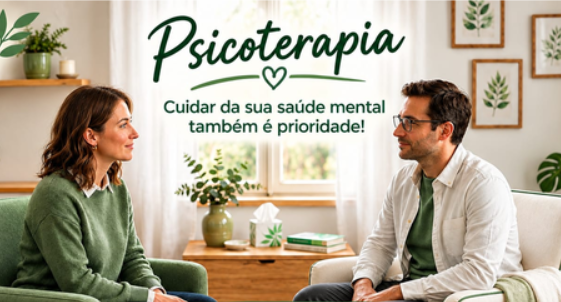

Psicoterapia Breve
Foco em objetivos pontuais com duração e ritmo alinhados com o cliente, respeitando a sua história e o momento atual que você está atravessando.
Objetivos construídos em conjunto
Atendimento acolhedor, humanizado e acessível por valor social. Sessões presenciais ou on-line no conforto de onde você estiver.
Primeira consulta de acolhimento gratuita (não cobrada).
Um primeiro encontro para você se sentir ouvido(a), conhecer como funciona o processo terapêutico e alinhar horários e valores com tranquilidade.

Psicoterapia acessível a todos por um valor social.
Tempo e objetivos alinhados com você
Mais acesso ao seu bem-estar
Primeiro encontro não é cobrado
Acreditamos que o cuidado com a saúde emocional não deve ser um privilégio distante. Conheça os quatro pilares que sustentam nosso atendimento:
Foco em objetivos pontuais com duração e ritmo alinhados com o cliente, respeitando a sua história e o momento atual que você está atravessando.
Terapia ética e de qualidade com valores acessíveis (sessões entre R$ 60 e R$ 80) para caber no orçamento, permitindo que você mantenha a constância do seu cuidado emocional.
Atendimentos adaptados à sua rotina e localização. Realize sua sessão presencialmente ou por videochamada, com total privacidade e praticidade.
Escuta profissional pautada no sigilo ético. Um lugar seguro para falar livremente sobre suas dores, dúvidas e angústias com acolhimento humano.
Muitas pessoas adiam o cuidado emocional por acharem que seus problemas "não são graves o suficiente" ou por receio do custo. A terapia é um espaço para qualquer pessoa que deseje se compreender melhor e viver com mais leveza.
Sensação constante de sobrecarga, mente acelerada, insônia ou cansaço emocional.
Dificuldade em impor limites, repetições de padrões afetivos, questões familiares ou conjugais.
Processos de luto, separações, mudanças de carreira, maternidade/paternidade ou crises de sentido.
Fortalecimento da autonomia emocional, acolhimento de inseguranças e construção de projetos de vida.
Espaço de Escuta Psicológica
Psicoterapia Individual • Adultos, Jovens e Idosos
Registro Profissional
CRP 07/4746 • Psicologia Clínica
Olá! Seja muito bem-vindo(a). Meu compromisso clínico é oferecer um espaço onde você possa pausar, respirar e falar sobre o que sente com liberdade, segurança e sem receio de julgamentos.
Por meio da Psicoterapia Breve e da escuta clínica fundamentada na Psicanálise / Abordagem Humanizada, trabalhamos juntos para compreender as raízes das suas angústias, construir recursos emocionais mais saudáveis e estabelecer objetivos claros para o seu bem-estar, respeitando sempre o seu tempo e a sua realidade financeira através do Valor Social.
Escuta Analítica e Psicoterapia Breve Focal, com plano terapêutico alinhado às suas demandas.
Atuação estritamente pautada no Código de Ética Profissional do Psicólogo e sigilo absoluto.
“Quem olha para fora sonha; quem olha para dentro desperta. Cuidar da saúde mental é permitir-se ser ouvido com respeito à própria história.”
Dar o primeiro passo pode gerar dúvidas. Por isso, tornamos o caminho até a sua primeira sessão o mais simples, transparente e acolhedor possível:
Clique no botão do WhatsApp para enviar uma mensagem inicial. Você pode tirar suas dúvidas livremente e informar os dias e horários que costumam ser melhores para você.
Realizamos nossa primeira consulta de acolhimento sem nenhum custo. É o momento de você falar sobre o que motivou sua busca e sentir segurança no vínculo terapêutico.
Juntos, definimos a frequência, o formato (presencial ou on-line), os objetivos da psicoterapia breve e alinhamos o valor social (entre R$ 60 e R$ 80 por encontro) que caiba com tranquilidade no seu orçamento.
Escolha sua preferência abaixo para já enviarmos a mensagem certinha no WhatsApp, ou clique diretamente em agendar:
Mensagem: “Olá! Gostaria de saber mais sobre as sessões com valor social.”
Reunimos as principais dúvidas de quem está dando o primeiro passo para iniciar a psicoterapia com valor social.
Aproveite a oportunidade e entre em contato.
Ficou com alguma outra dúvida ou quer verificar os horários disponíveis para a sua primeira consulta gratuita de acolhimento?